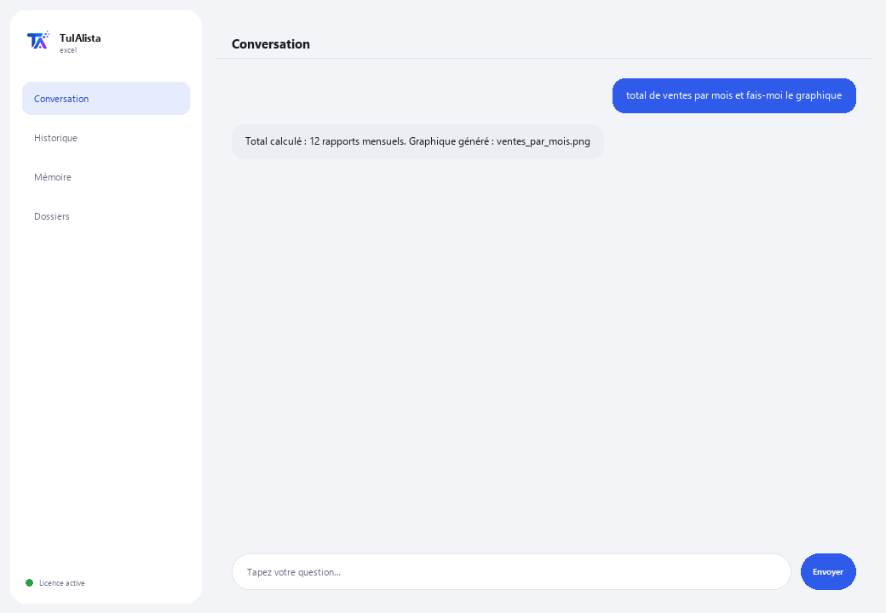

Agent Excel et données
Demandez-lui ce que vous voulez dans votre langue et il le FAIT vraiment : totaux, croisements, tableaux croisés dynamiques, graphiques et rapports — sans écrire une seule formule.
Que résout-il et de quoi avez-vous besoin ?
Ce n'est pas un chat qui se contente de commenter vos données : c'est un analyste qui exécute vraiment l'opération (dans un bac à sable local sécurisé, isolé de votre système) et vous livre le résultat — tableau à l'écran et fichier Excel ou graphique prêt à ouvrir.
- Vous avez besoin de : votre clé de licence (TIA-XXXX-XXXX-XXXX-XXXX) et du dossier contenant vos feuilles Excel (.xlsx) ou CSV. Ni Python ni formules.
- Premier résultat en moins de 5 minutes : vous installez, activez, choisissez votre dossier et demandez “total des ventes par mois et fais-moi le graphique”.
- Vos données ne quittent jamais votre ordinateur — seule la structure (colonnes) est envoyée à l'IA, jamais les données, et les recettes les plus courantes n'utilisent même pas l'IA.
soporte@tuialista.com ou visitez tuialista.com/soporte — nous répondons généralement le jour même.1 Ce que fait cet agent
Pointez-le vers vos feuilles et demandez-lui n'importe quoi dans votre langue :
- “sors le total par région et fais-moi le graphique”
- “crée une feuille avec ces colonnes et relie-la à l'autre fichier”
- “rapport exécutif avec mise en forme, tableau croisé dynamique et graphique intégré”
L'agent comprend, construit l'opération et l'exécute vraiment dans un bac à sable local sécurisé — il ne se contente pas de décrire ce qu'il ferait. De plus :
- Il dispose de recettes automatiques (règles fixes déjà éprouvées, sans IA, qui ne se trompent jamais) pour le plus courant : rapprocher 2 fichiers, consolider, comptes clients par ancienneté, stock sous le minimum, récupérer des données d'une autre table (comme un RECHERCHEV/VLOOKUP mais sans formules), tableaux croisés dynamiques, flux de trésorerie, TVA, et plus encore.
- Il se souvient d'une question à l'autre : vous pouvez lui dire “ajoute ceci au fichier précédent” ou “enregistre-le dans mes documents”.
- Il peut enregistrer vos routines en plusieurs étapes et les répéter à la demande.
- Il a un mode en direct : si votre Excel est déjà ouvert, il peut lire et écrire des cellules directement dedans (avec votre confirmation avant toute écriture).
2 Installation (2 minutes)
Pour Windows. Pas besoin d'internet permanent ni de rien envoyer sur le cloud.
Téléchargez l'installateur depuis tuialista.com/descargar (agent Excel) et ouvrez-le. Il crée un raccourci sur votre bureau avec le logo — pas besoin de Python ni de terminal.
Double-cliquez sur la nouvelle icône. Collez votre clé de licence (reçue par e-mail à l'achat) et cliquez sur Activer. Une coche verte apparaît quand elle est valide.
Sélectionnez le dossier contenant vos feuilles Excel (.xlsx) ou CSV et cliquez sur Commencer à utiliser l'agent. La prochaine fois, il démarre directement — il se souvient de votre clé et de votre dossier.
3 Comment l'utiliser
L'agent ouvre une fenêtre de discussion, comme une app de messagerie — pas un écran noir de programmeur. Aucune commande à mémoriser : vous demandez ce dont vous avez besoin comme vous le feriez avec un analyste, cliquez sur Envoyer (ou Entrée), et il le fait :

Ce qu'il fait SANS avoir besoin de l'IA (mode sûr, activé par défaut)
- Rapprocher 2 fichiers / détecter les manquants
- Consolider plusieurs fichiers en un seul · retirer les doublons · nettoyer
- Comptes clients par ancienneté (30/60/90)
- Stock : sous le minimum · valoriser · stock dormant
- Croiser et récupérer des données (RECHERCHEV) · tableaux croisés dynamiques · top-N · totaux par X
- Comparer prix/versions · devis le moins cher · détecter les anomalies
- Flux de trésorerie · budget vs réel · TVA · heures de pointage
Vous voulez voir les 20 recettes complètes avec un exemple réel de chacune ? Consultez le Catalogue de recettes — un document à part vu sa longueur : catalogo_recetas.pdf à côté de ce manuel, ou la version interactive sur tuialista.com/guia/excel/recetas.
Mémoire et routines
Vous pouvez lui dire “enregistre ceci comme mon rapport hebdomadaire” pour répéter l'opération plus tard avec “lance mon rapport hebdomadaire”, ou “reprends là où on en était hier” pour continuer — même dans une autre session.
Mode en direct (Excel ouvert)
Si votre fichier est déjà ouvert dans Excel, vous pouvez lui demander des choses directes sur les cellules (“combien fait la somme de B2:B40 ?”, “mets le total en D5”). Les lectures répondent instantanément ; les écritures vous montrent un aperçu et attendent votre “oui” avant de toucher au fichier.
4 Exemples d'usage courant
Obtenir un total sans formules
“quel a été le total des ventes de mars ?”
Comparer des périodes ou catégories
“compare les ventes de janvier et février par région” — répond avec un tableau comparatif.
Rapprocher deux fichiers
“rapproche le fichier bancaire de celui de comptabilité et dis-moi ce qui manque” — recette automatique, sans IA.
Un rapport complet
“rapport exécutif avec mise en forme, tableau croisé dynamique et graphique intégré” — vous livre le fichier Excel prêt.
5 Questions fréquentes
Mes données sont-elles envoyées sur internet ?
Quels formats accepte-t-il ?
Exécute-t-il vraiment l'opération ou se contente-t-il de la décrire ?
Que se passe-t-il si je demande quelque chose hors des recettes éprouvées ?
Le mode en direct peut-il endommager mon Excel ouvert ?
Dans quelle langue répond-il ?
Peut-il lire plusieurs fichiers à la fois ?
Puis-je changer le dossier de données ?
Modifie-t-il mes fichiers originaux ?
Que sont les “routines” ?
6 Résolution de problèmes
Un fichier Excel ne se charge pas
Affiche “0 feuilles chargées”
Affiche “Licence invalide” ou demande de se reconnecter
Indique que cette tâche n'est pas en mode sûr
Le mode en direct ne répond pas
Aucune de ces solutions n'a résolu votre problème ? Écrivez-nous directement — nous serons ravis de l'examiner avec vous.
soporte@tuialista.com ou visitez tuialista.com/soporte — nous répondons généralement le jour même.7 Confidentialité
Vos données ne quittent jamais votre ordinateur.
- Les recettes automatiques (rapprocher, consolider, comptes clients, stock, récupérer des données d'une autre table, tableaux croisés dynamiques, flux de trésorerie...) s'exécutent 100 % en local, sans IA.
- Pour les nouvelles tâches avec IA (mode expert), seule la structure (noms de colonnes) est envoyée à l'IA, jamais vos données.
- La seule chose qui transite par internet est : (1) une vérification que votre licence est active, et (2) la structure de vos feuilles quand l'IA est nécessaire pour une nouvelle tâche.